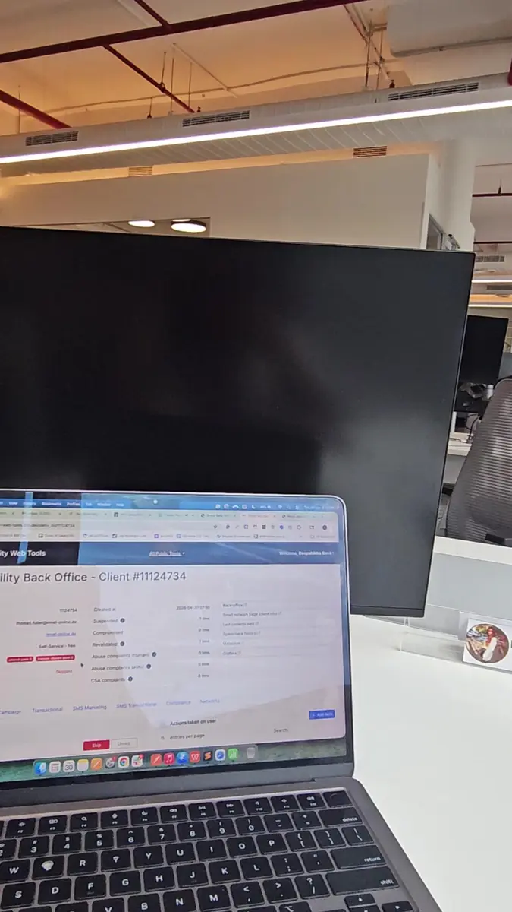

Coming Home · 6 weeks · with me, live every week
You're not short of information. You're short of permission.
For the one who's good at a job they don't love and keeps saying "a few more months". In 6 weeks we find what you actually want, look at what's been stopping you (money, people, fear) as it is, and you put your first real thing out into the world.
Right now
You already know. You've just been waiting.
- Monday, 9:30You open the laptop and something in your chest goes quiet. Not bad. Just… gone.
- Bank appYou don't open it, because the number decides how long you have to stay.
- "What's the plan?"Someone at home asks. You freeze, laugh it off, change the topic.
- SavedA folder of saved reels, a note on your phone, a course you paid for and never opened.
- In your head"I know this is not for me, but…" and the "but" has been winning for two years.
Six weeks from now
Same life, maybe. A different you living it.
I'm not promising you'll have quit. I won't tell you to. Here's what changes.
- Monday, 9:30Maybe the same desk. But you know what you want, why you want it, and what you're doing about it this week. It's a choice now, not a sentence.
- Bank appYou open it and your stomach doesn't drop. You know your number: what you need each month, and how many months you're covered.
- "What's the plan?"You say one true sentence to someone who matters. Out loud. Without explaining yourself for ten minutes after.
- Your thingSomething with your name on it is out in the world, and someone can pay for it. Even if it's ₹499. Even if it's tiny.
- The pull backThe bonus lands, the "just one more year" voice starts. You feel it in your body, you know what it is, and you don't snap back.

Why I made this
"I just need a remote job, then all will be fine."
I believed that for three or four years. Then it clicked: a remote job would just give me a remote version of the same life.
I didn't need more information. I'd watched every video, saved every reel. What I needed was to look at what I already knew, sit with the fear long enough for it to lose its grip, and then actually live it. That's what Coming Home is. It's the 6 weeks I wish someone had walked me through.
I won't motivate you out of it. I'll help you see it as it is.
What we do, week by week
See it. Stay with it. Live it.
- Week 1 · see it
Whose life is this?
The rules you never chose: the right job, the right age, the right plan. You find the ones that aren't yours and give them back.
- Week 2 · see it
You already know
Want vs should. Fear vs your gut, felt in your body, not argued in your head. What are you pretending not to know?
- Week 3 · stay
Why you keep snapping back
"A few more months" is not a plan. It's a feeling wearing the plan's clothes. What people will say, and why it feels so loud.
- Week 4 · stay
The script you were handed
Find the belief running the show, rewrite it, and take your first step where people can see it.
- Week 5 · live
Let it in: money & your first paid thing
The money rules you grew up watching. Your enough number. Putting up something people can pay for, and saying your price out loud.
- Week 6 · live
Live as your higher self
Say it to one person who matters. Your plan for the days the old life pulls you back. And a ritual to walk through your own door.
What you get
Every week ends with a ritual.
Candles, a jar, a line on the floor, your own front door. Done with your hands and your body, so you don't just understand it. You remember it.
- A live group call with me, every week. Hot seat: you bring what's stuck, we work on it together, live.
- Short video lessons, released week by week. Real stories, the why behind every tool, the science where it helps.
- A guided meditation each week. (The part people tell me they cry in, and feel lighter after.)
- One worksheet and one small daily action each week, so it lives in your day, not in your notes app.
- The weekly ritual. The bit nobody else does.
- The community, with me in it, for 3 months. And the lessons are yours for life.
This is for you if
- You're good at your job and it still doesn't feel like yours.
- You've asked "should I?" for months, and you're tired of your own question.
- You want the science and the magic. You meditate, or you want to.
- You're ready to do one small, real thing a week, even scared.
It's not for you if
- You want someone to tell you to quit. I won't.
- You want a guaranteed income in 6 weeks. Nobody honest can promise that.
- You'd rather keep reading about it than try anything.
- You're in a really dark place right now. Please talk to a therapist first. I mean that with love.
Your investment
₹49,999
6 weeks · a live call with me every week · 3 months of community · lessons for life.
What happens next
- Book a free 30-minute call. A few short questions first, so I know where you are.
- We talk honestly. If it isn't the right time or the right fit, I'll tell you.
- If it fits, you get the link, join, and we start.
Questions people ask me
The things you're probably thinking.
₹49,999 feels like a lot.
It is a real number. I won't pretend it isn't. So ask yourself the other one: what has another year of "a few more months" cost you? Your Sundays, your energy, the version of you that used to light up.
Book the free call first. If it isn't right for you right now, I'll say so.
What if I make the wrong decision?
Coming Home doesn't ask you to decide your whole life. It asks you to stop deciding from fear, and to take the next true step. Small steps are easy to change. Years of postponing aren't.
My family won't support this.
You don't need their permission to look at your own life. In week 6 you say one true sentence to one person who matters: the truth, not the plan. People attack plans. They can't argue with your truth.
I don't even know what I want.
Most people who say that do know. It's buried under "should". Weeks 1 and 2 are exactly for this. And if you really are blank, we start with what gives you joy right now, not what you'll do forever.
I already know what I want. Is this still for me?
Yes. Knowing was never the hard part. Staying with it when the fear, the money and the people get loud is. That's weeks 3 to 6.
Do I have to quit my job during the 6 weeks?
No. Never. I won't ruin your life with an experiment. Most people do this with their job still running. What changes is who's making the choices.
How much time does it take?
The weekly live call plus a few hours across the week for the lessons, the worksheet and the ritual, at your own pace. The daily action takes minutes.
A note from me
You didn't find this page by accident.
I'm not going to tell you it'll be easy. I still have fears and bad days. The difference is they don't stop me anymore. That's what I want for you.
If something in you went "this is me" while reading, listen to that. Come talk to me.
love, Deepshikha 🤍